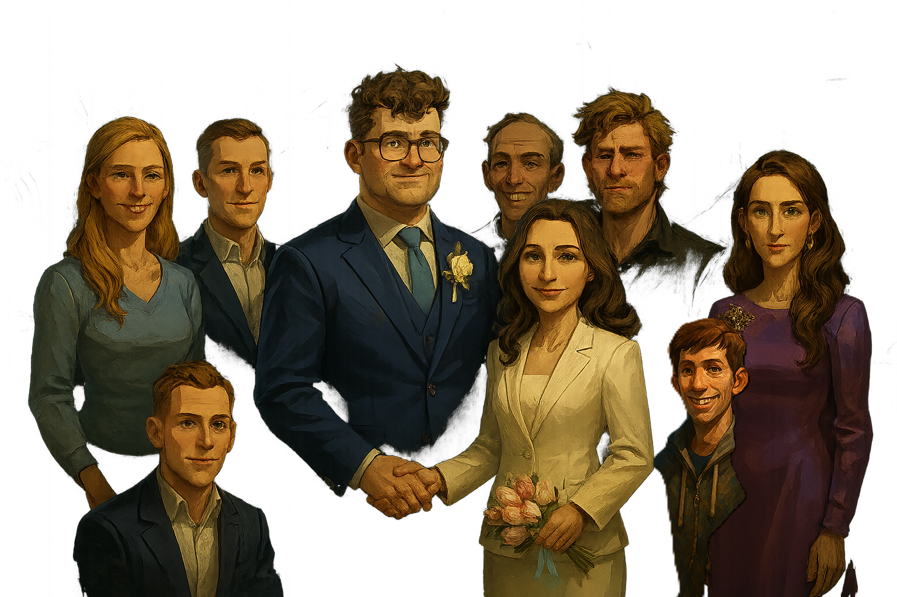
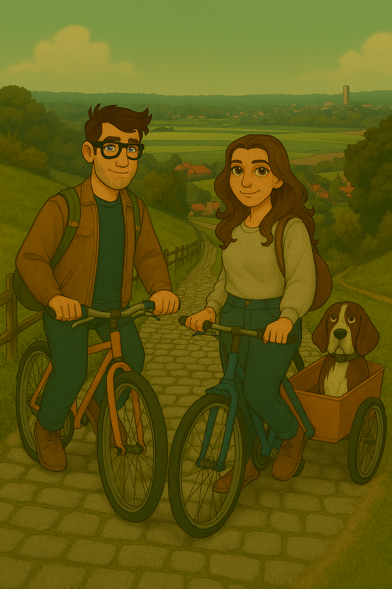
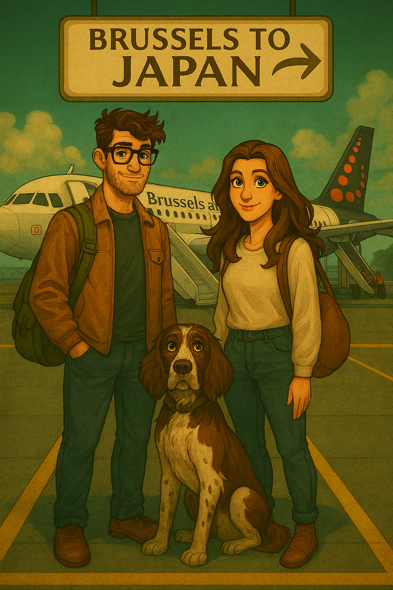
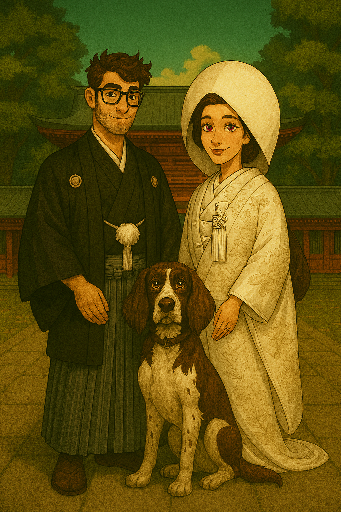

Three riddles · Three numbers · One lock
✦ ✦ ✦

Within this game you will find three riddles. Each riddle you solve will reveal a
number — pieces of a code that will open a lock.
Good luck solving the riddles, may your mind be sharper than the edge of a blade.
Three paths lie before you
A matrix of symbols hides a name. The clue tells you where to look.
Single AnswerNineteen clues about the spring classics. One golden column holds the secret code.
Crossword + CodeTen locations. Ten words. Find every word to unlock part of the code.
10 Steps
Just one hint is given for this riddle. Perseverance shall be rewarded.
"Find the answer hidden within the matrix, and the first part of the code shall be yours."

To retrieve the next part of the code, your knowledge of the great spring classics will be tested.
Read the highlighted column from top to bottom. That word holds the key.
Use it to find the four-digit code hidden at the end of the road.
"Only those who know the peloton shall claim the second secret."

Departure
To retrieve the next part of the code to open the lock,
you must use Google Maps to wander around Japan and use the clues to find the word that we are looking for.
Ten riddles await. Answer them all, and another part of the code shall be yours.
3 Bodylan Problem · Riddle
Oolaa niet eerst ook niet laatst
Solve the crossword · read the golden column · enter the code
Golden column word: _ _ _ _ _ _ _ _ _ _ _ _ _ _ _ _ _ _ _
Chamber I · Guardian's Riddle

TokyoThe matrix yields its secret. A hidden number is revealed — the first piece of the code.
The First Secret
You have proven to be a true master of the spring classics! As a reward, here is another part of the code:
The Second Secret
Another part of the code reveals itself. Well done on walking the path of the rising sun. You are now ready to travel to Japan!
The Third Secret · Another part of the code